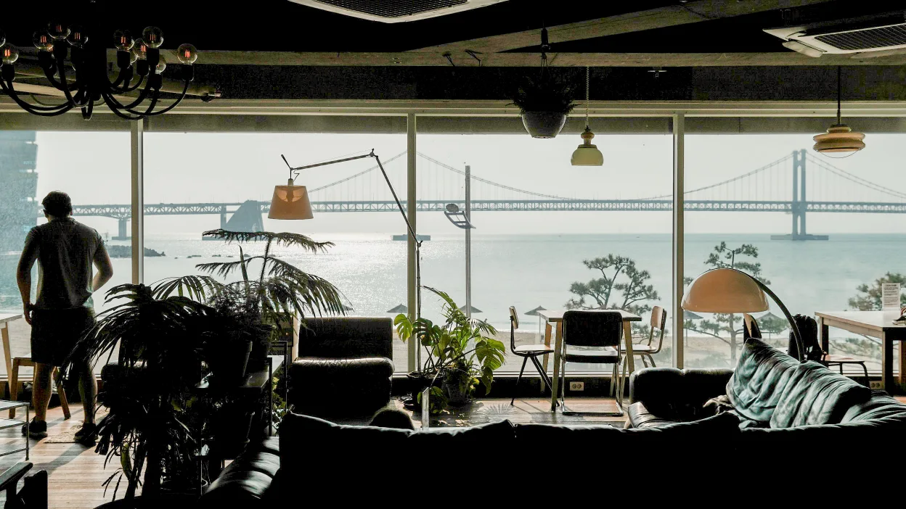
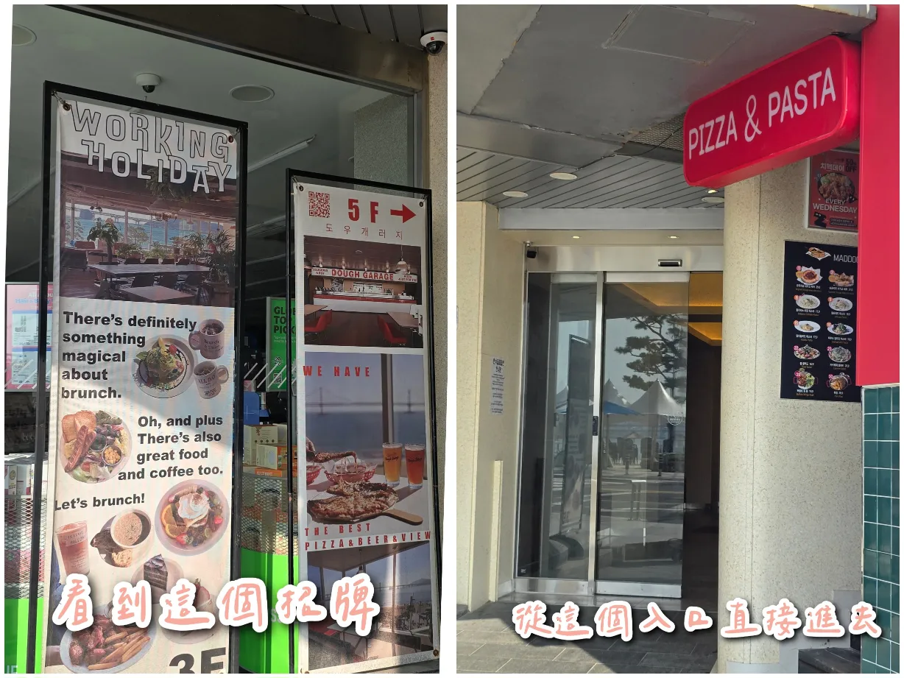
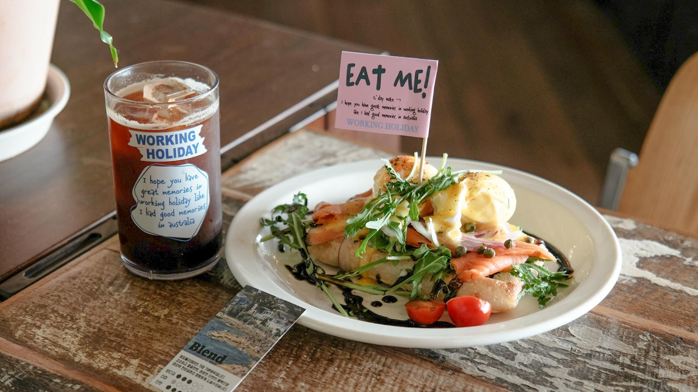
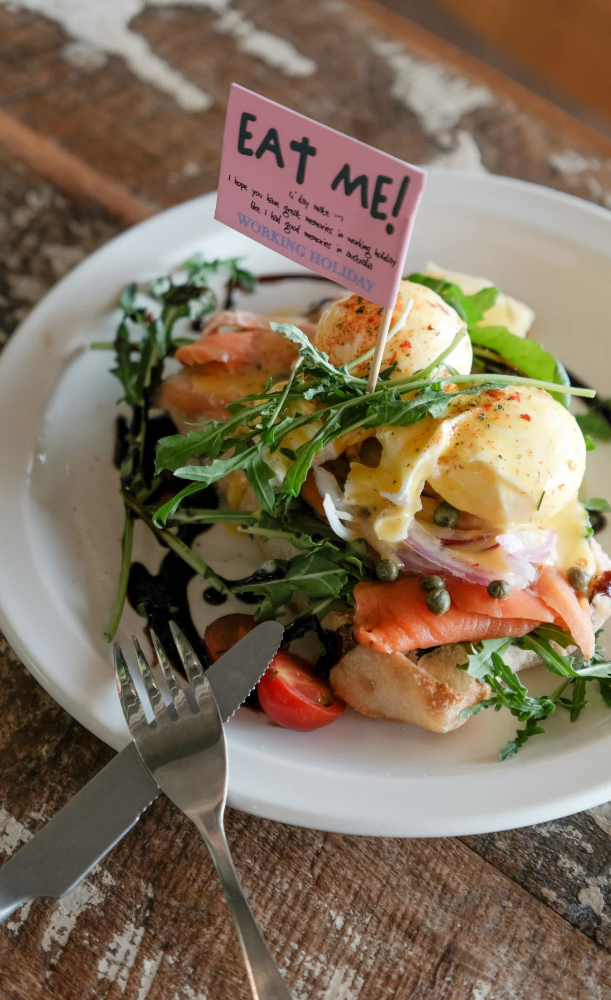
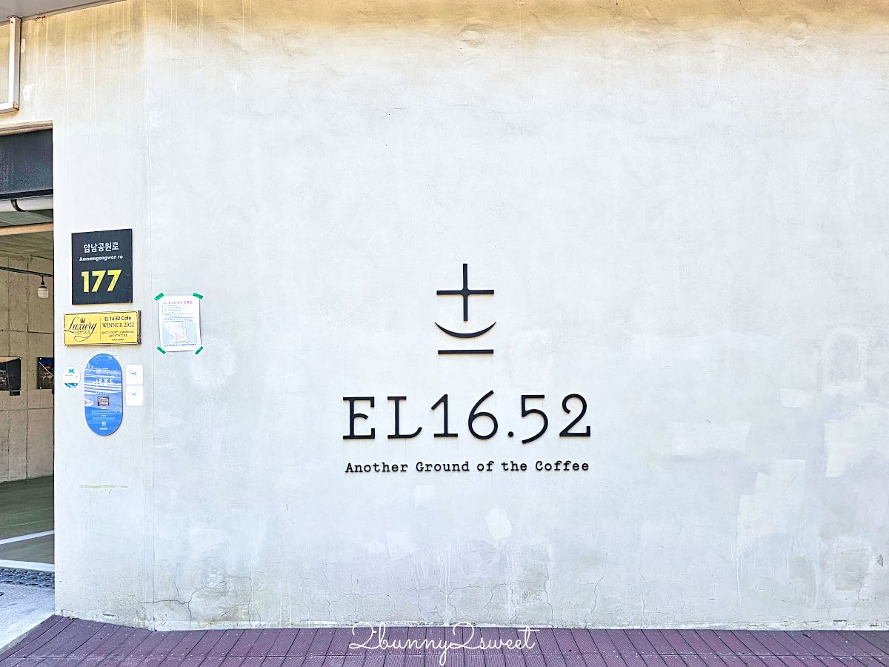
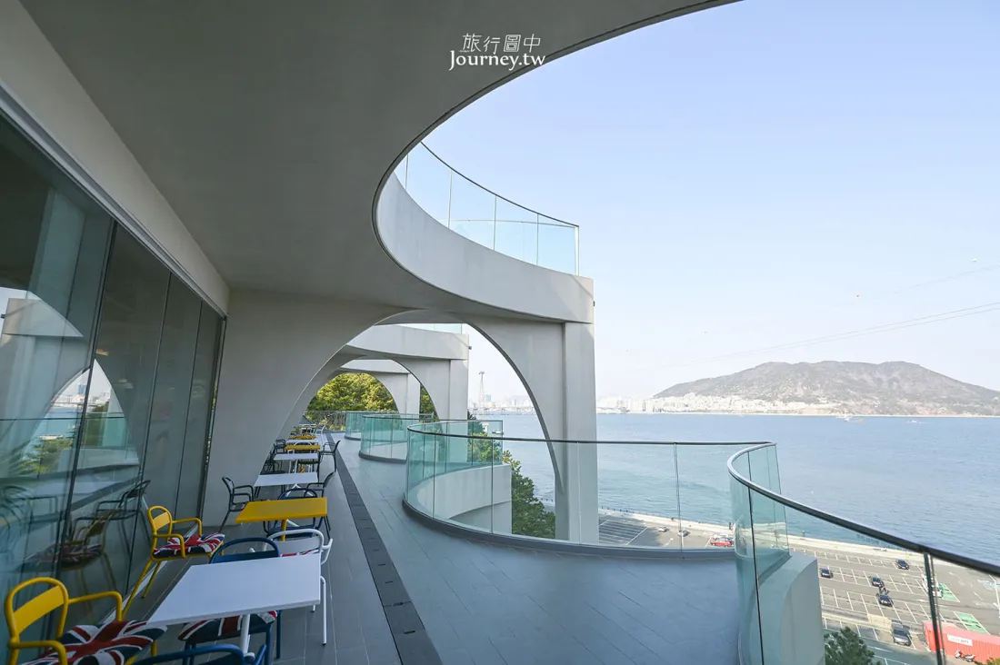
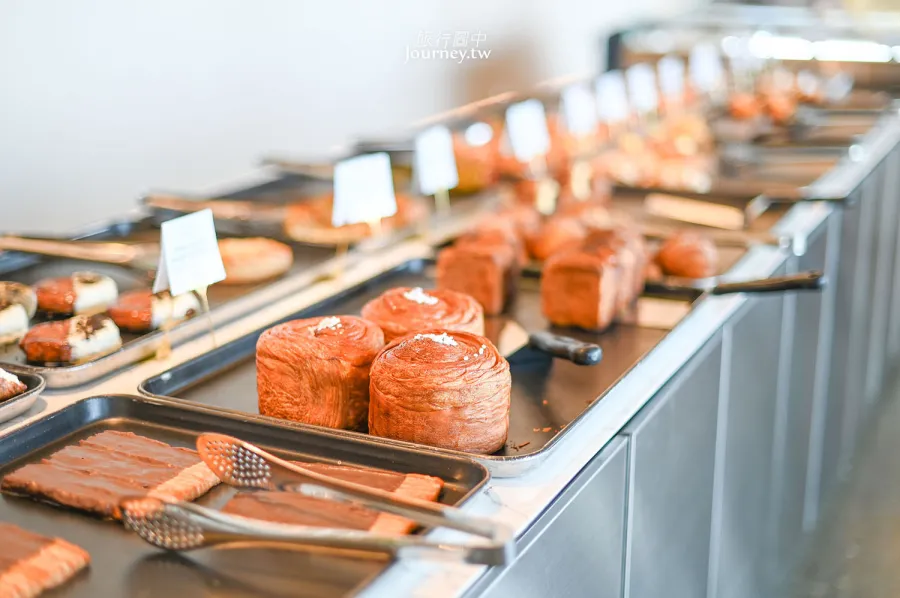
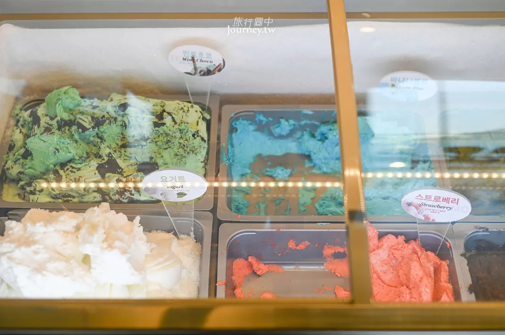

懸崖海景與文青咖啡廳交織的海島漫遊
位於釜山南側的一個海島區，過去以造船廠與修船工業聞名，近年來透過老舊建築改造與沿海景觀規劃，轉型為結合壯麗海景、文創藝術與大型海景咖啡廳的熱門旅遊地
釜山最具代表性的壯闊國家地質公園！位於影島最南端，以茂密的松林、陡峭的奇岩絕壁與蔚藍無垠的開闊海景著稱。搭乘可愛的遊園列車（Danubi 列車）穿梭其中，登上影島燈塔與觀景台俯瞰海蝕崖，天氣晴朗時甚至能遠眺日本對馬島。


- 售票時間 09:00-17:30
- 營運時間 09:20-17:30
- 成人單程2000韓元、循環4000韓元
- 持釜山pass免費自由搭
- 從南浦站出發叫計程車，到Danubi換票處，總共需要20分鐘左右的車程
- 從南浦站出發，搭乘30號、8號公車，大約行經22個站，在太宗台、太宗台溫泉站下車，下車後步行9分鐘抵達Danubi換票處
- 搭乘綠色線觀光巴士，一大早從釜山站出發
- 園區範圍廣大且坡度較陡，強烈建議購票搭乘 Danubi 遊園列車往返各站點以節省體力。
- 前往影島燈塔觀景台需走一段較長且陡峭的下坡與階梯步道，請穿著好走的平底運動鞋。
- 雨天或強風等惡劣氣候時，Danubi 遊園列車可能會暫停行駛，出發前請留意天氣狀況。
韓國首座綜合性海洋博物館，外觀以「水滴」為靈感打造。館內共4層樓，最受歡迎的是3樓擁有390噸水量的「360度圓形海底隧道水族館」，可近距離觀察鯊魚、魟魚與海龜。館內還設有航海歷史文物、兒童海洋體驗館及海景展望台，是影島最具代表性的免費室內景點。


- 地鐵 1 號線至「南浦站」下車，從 6 號出口出站後，轉乘市區公車 66 號或 186 號，即可一路直達「國立海洋博物館」站
- 計程車：目的地輸入「국립해양박물관」或是韓文地址「부산광역시 영도구 해양로301번길 45」
- 3樓圓形水族箱每日固定有餵食秀（潛水員餵食展示），通常在上午與下午各有一場，入場時可先至服務台確認當日時刻表。
- 館內設有置物櫃與無障礙電梯，推嬰兒車或攜帶大型行李也能輕鬆參觀。
- 2樓設有「兒童海洋博物館（어린이박물관）」，若有帶小朋友同行建議先於現場或官網預約場次。
草梁洞與釜山站周邊極具口碑的在地老字號！以整隻新鮮嫩雞搭配大量青蔥、馬鈴薯與秘製清甜高湯熬煮，湯頭甘醇鮮美、不油不膩。雞肉軟嫩多汁，沾上特製辣醬、黃芥末、醬油與高麗菜絲調配的靈魂沾醬更是一絕。最後加入刀削麵與煮成海苔雞蛋粥（죽）是老饕必吃的經典收尾。


- 從南浦站８號出口，走路過去１１分鐘
- 南浦站６號出口處，轉搭乘６、７、１７、１１３號巴士過影島大橋
- 靈魂沾醬吃法：依店家推薦比例將「辣椒醬＋黃芥末＋醬油醋＋蒜泥」混合均勻，拌入爽脆高麗菜絲，搭配雞肉一起入口最道地解膩。
- 二段式收尾：雞肉與馬鈴薯吃完後，務必先加點刀削麵（칼국수）吸附濃郁雞湯精華，最後再請店員加入白飯、海苔與雞蛋煮成精華粥（죽）。
- 用餐尖峰時段常有在地上班族聚餐，建議提早抵達或稍微避開正餐尖峰期以減少候位時間。
坐落於影島海岸邊的道地海味聚落，由在地海女阿姨每日現捕新鮮海鮮。坐在礁岩海岸旁吹著海風，品嚐招牌「紫菜包飯＋生海膽」與熱騰騰海鮮拉麵，體驗最粗獷純粹的釜山海濱風情。


- 從地鐵南浦站6號出口轉508 / 7 / 71號公車到南高橋站（남고교）步行7分鐘
- 從地鐵釜山站7號出口轉508號公車到南高橋站（남고교）步行7分鐘
- 戶外岩石座位區地面高低不平且臨海，行走與端托盤時請特別注意腳下安全。
- 必點吃法：點一份紫菜包飯（김밥）與新鮮海膽（성게알），自行將海膽鋪在飯捲上享用，鮮甜美味。
- 戶外臨海區風勢通常較大，建議攜帶防風薄外套，用餐時也請壓好輕便餐具與紙巾。
依山傍海的「釜山聖托里尼」，沿著絕壁海岸步道漫步，穿梭在彩繪階梯、海景咖啡廳與特色文創小店之間，盡情享受蔚藍海景與文藝氛圍。


- 此處為實際居民生活區，參觀時請保持安靜、勿打擾住戶。
- 沿途階梯與坡道多，建議穿著好走的平底鞋或布鞋。
- 熱門打卡點「白淺灘海岸隧道」常需排隊拍照，建議預留充足時間。
由影島舊造船廠或老舊工業倉庫改造而成的複合式海景藝文咖啡廳！保留了粗獷的水泥鋼構與挑高空間，融合現代設計美學與藝術展覽。店內擁有整面超大落地觀景窗，能將釜山港海景、停泊船隻與壯麗的影島大橋／釜山港大橋盡收眼底，是影島極具氛圍感的打卡熱點。
- 地鐵 釜山1號線南浦站8號出口 → 於釜山港灣公社公車站轉乘88-1路公車 → 在Homeplus公車站下車，步行2分鐘
- 最佳拍照位：靠窗第一排海景沙發區光線絕佳，午後至傍晚人潮較多，若想坐窗景第一排建議提早抵達或稍作等候。
- 建築內部保留部分工業階梯與挑高挑空設計，行走與拍照時請留意腳下階梯。
釜山影島超大型地標級複合文化咖啡旗艦空間！以「巨型郵輪」為建築設計概念，佔地數千坪。挑高的階梯式全景落地窗座位直面釜山港灣與五六島海景，館內集結了大型專業烘焙坊、精品咖啡、文創選品店與當代藝術展覽，兼具現代美學與壯闊海景。


- 從「地鐵南浦站」出發，在6號出口旁的「影島大橋站 영도대교」公車站，坐綠色17號公車，就能輕鬆直達「米廠石油站 미창석유」
- 館內空間極為寬廣且設有多個樓層，點餐後可自由選擇各樓層室內或戶外草坪觀景區入座。
- 烘焙麵包品項極為豐富且多樣，建議先挑選麵包再至櫃檯統一結帳點飲品。
- 附設大型收費停車場與公車站點，搭乘公車至「國立海洋博物館」周邊站點或搭乘計程車前來皆十分便利。
釜山廣安里巷弄裡宛如歐洲童話般的小法式雜貨咖啡廳！以法文「小豬（Cochonnet）」為名，店內擺滿精緻的法式復古雜貨、手作餐具與香醇烘焙。招牌提供道地的法式熱濃湯套餐、現烤歐式麵包與精緻甜點，溫馨鄉村風的每個角落都極具拍照美感。
- 店內座位數較少且空間精緻，熱門時段常需現場登記候位。
- 招牌「每日手工法式濃湯搭配法棍」為限量供應，晚到容易售罄。
- 陳列的法式餐具與雜貨小物多為可購買商品，挑選時請小心輕放。
釜山白淺灘文化村內極具人氣的療癒系文創雜貨小店！店名「담아가다」意為「滿載而歸、裝入心中」。店內網羅了眾多韓國獨立插畫家設計的文具、明信片、釜山限定海景貼紙、手作香氛與特色陶瓷器皿，非常適合作為挑選釜山旅行紀念品或伴手禮的挖寶基地。
- 地鐵 1號線南浦站6號出口，於影島大橋‧南浦站公車站搭乘508、7、71路公車，在影仙公寓公車站下車，步行2分鐘
- 店內空間小巧溫馨，若遇人潮較多時建議依序排隊入內參觀。
- 架上陳列眾多精緻易碎手作陶瓷與玻璃飾品，挑選拿取時請小心輕放。
- 店內提供多款以白淺灘貓咪、蔚藍海景為主題的原創明信片與文具，是極具紀念價值的特色伴手禮。
創立於 1953 年的韓國元祖級國民美食！作為釜山歷史最悠久的魚板品牌，三進魚板首創「像挑選烘焙麵包一樣夾取魚板」的創新型態。店內提供數十種現炸現做的特色魚板，其中外皮金黃酥脆、內餡包入整顆香濃起司或整隻鮮蝦的「炸魚板可樂餅」更是必吃經典。

- 招牌「魚板可樂餅（어묵고로케）」（起司、鮮蝦、辣椒等口味）現炸現吃口感最佳，亦提供盒裝外帶。
- 影島本店對面設有專屬內用休息區，備有微波爐可自行加熱現買的魚板享用。
- 若行程不順路前往影島本店，釜山站（KTX 車站內）與各大百貨公司亦設有大型門市方便採購伴手禮。
海雲台 · 浪漫日落海景列車
坐著彩色膠囊列車看海，晚上吃青沙浦現烤海鮮 🦪
釜山超人氣海景打卡景點！搭乘行駛在高架鐵軌上的彩色復古單軌膠囊列車，在 7–10 公尺高空中以慢速漫遊，悠閒俯瞰無邊際的蔚藍海景與沿岸松林風光。


- 熱門時段與夕陽班次極為搶手，強烈建議提早 2 至 4 週至官網預約購票。
- 單程行車時間約為 30 分鐘（時速約 5 km/h），車廂內無冷氣、僅設有小電扇與通風窗。
- 抵達青沙浦站後，可順道打卡「青沙浦灌籃高手平交道」與品嚐烤貝海鮮。
釜山最具代表性的地標級海灘！長達 1.5 公里的潔白細沙灘與高聳的現代摩天大樓群相互輝映。無論是沿著木棧道漫步吹海風、餵海鷗，還是欣賞壯麗的海岸天際線，都能感受釜山專屬的悠閒海濱渡假氣息。

- 沙灘鄰近海雲台傳統市場與冬柏島散步道，建議可串聯安排在同一半日行程。
- 冬季至初春常有大量海鷗聚集，若購買蝦味先餵食需注意周遭海鷗群飛。
- 海邊風勢普遍較大，春秋冬季建議攜帶防風保暖外套。
影島與南浦洞一帶極具人氣的燉牛肋排專門店！招牌燉牛肋排（소갈비찜）燉煮得軟嫩入味、骨肉輕輕一夾即可分離。濃郁甘甜的特製秘醬帶有淡淡果香與芝麻香，拌飯吃堪稱白飯小偷，還可搭配滿滿拔絲起司與現烤大蔥，是在地人與旅客都盛讚的道地韓式肉食料理。


- 搭乘釜山地鐵2號線至海雲台站（해운대역），從 4號或2號出口 出站，步行約 2 分鐘（約 129 公尺）往舊火車站方向、越過鐵軌後的紅磚建築2樓即可抵達
- 辣度可自選：點餐時通常可選擇微辣（순한맛）、普通辣（보통맛）或大辣（매운맛），不敢吃辣者建議選擇微辣或普通辣。
- 加起司更美味：強烈推薦加點起司（치즈사리），鋪在牛肋排上炙烤融化後拉絲濃郁，能完美中和醬汁的微辣感。
- 壓軸必吃炒飯：肉塊吃得差不多後，記得留下少許醬汁請店家加入海苔、麻油與白飯做成鐵板炒飯（볶음밥）收尾。
釜山極具代表性的 24 小時老字號豬肉湯飯名店！以 100% 國內產豬骨長時間大火熬製成濃郁乳白色的醇厚高湯，完全沒有豬腥味。鍋內鋪滿鮮嫩扎實的豬肉切片與扎實飽滿的手工血腸，熱氣騰騰、份量十足，是無論清晨早午餐或深夜宵夜都能隨時暖胃的經典美食。


- 海雲台店（離埃爾莫門託最近）：從地鐵2號線海雲台站 5號出口直走步行約 3–5 分鐘（位於九南路主要大街上）。
- 南浦／釜山站分店：搭乘地鐵1號線至鄰近商圈站點，步行約 3–5 分鐘即達。
- 在地調味秘訣：上桌時湯頭原味較淡，建議依個人口味加入蝦醬（새우젓）提鹹鮮味、辣醬（다대기）增香，並趁熱將涼拌韭菜（부추무침）與隨附的麵線（소면）整坨丟入湯中攪拌。
- 多種部位可選：若不敢吃內臟或血腸，可直接點純「豬肉湯飯（돼지국밥）」；若想吃切片三層肉沾醬包生菜，推薦點「白切肉定食（수육백반）」。
- 自助吧檯（Self Bar）提供蒜頭、青椒、洋蔥、泡菜與辣蘿蔔，吃不夠可自行免費續加。
海雲台最知名的超人氣厚切熟成烤肉名店！嚴選高品質韓國產熟成五花肉與厚切豬頸肉，由專業店員提供全程代烤桌邊服務，精準掌控火候將外皮烤得金黃酥脆、內裡肉汁滿溢。附贈滿桌精緻小菜，搭配招牌大醬湯或冷麵一起享用，是海雲台大口吃肉的排隊首選。


- 釜山地鐵「203海雲台站」3號出口，步行約3分鐘
- 專人桌邊代烤：店員會負責將肉塊烤至最佳熟度並剪成適口大小，客人無需自己動手，只需安心享用。
- 經典吃法組合：將烤至酥香的五花肉沾取特製粗鹽、芥末或包肉醬，搭配烤過的水泡菜、紫蘇葉與醃蔥絲一起包著吃，清爽解膩。
- 韓國烤肉店基本規定首次點餐至少須點 3 份肉品起（3人份），即使 2 人用餐也是點 3 份肉為基準。
韓國知名的連鎖熟成頂級豬肉專門店，店名「高飯」寓意為「高水準的完美一餐」。主打高規格低溫熟成五花肉、橫膈膜肉（海鷗肉）與特級豬頸肉，並由受過專業訓練的店員提供全程代烤桌邊服務。滿桌提供蕨菜、明品名產泡菜與多款特調沾醬，層次豐富且口感軟嫩多汁。


- 釜山地鐵二號線至海雲台站（해운대역） 5號出口，步行約3分鐘路程
- 專人桌邊代烤：店員全程幫忙烤肉、剪肉，並會將烤熟的肉品放在邊緣保溫石盤上，免動手就能享用最佳熟度。
- 烤蕨菜獨家吃法：店員代烤時會將智異山野生蕨菜（고사리）放上烤盤微煎，與厚切五花肉、名品明太魚子醬或芥末一起包著吃，風味絕佳。
- 點餐建議：初次造訪推薦直接選擇「高飯綜合套餐（고반세트）」，一次嚐遍五花肉、豬頸肉等多種經典熟成部位。
釜山版《灌籃高手》平交道！位於青沙浦站出站後下坡處，復古海岸列車從平交道緩緩駛過，背景正對著筆直延伸向蔚藍大海的下坡街道，充滿濃厚的日系日劇氛圍，是近年釜山極具人氣的電影感拍照熱點。


- 此處為實際行車幹道與鐵路路口，拍照時務必站在人行道與斑馬線內，切勿阻礙車輛通行或擅闖鐵軌。
- 海岸列車約每 10–15 分鐘會有一班經過，可提前在對面街道架好相機等待畫面。
- 拍完照後可順著斜坡往下走至海港，參觀紅白雙胞胎燈塔並品嚐青沙浦知名的炭烤扇貝與海鮮。
釜山廣受歡迎的人氣質感烘焙麵包店！以現烤出爐的特色麵包、可頌酥皮與招牌手工甜點聞名。店內空間散發著濃郁麥香與溫潤的木質調氛圍，是漫步探索釜山巷弄時不可錯過的下午茶與甜點補給站。


- 從海雲台地鐵站 4 號出口出發，走路 6 分鐘就到Standard Bread
一眼坐擁廣安大橋，釜山最浪漫的看海與夜景聖地
白天吹海風、泡在海景咖啡廳發呆，入夜後廣安大橋亮起璀璨燈光，配上沙灘酒館的微醺氛圍與週末無人機秀
釜山廣安里極具人氣的澳洲渡假風早午餐咖啡廳！以澳式「Working Holiday」為靈感，純白明亮的空間搭配自然綠植與質感木質調，營造出悠閒的南半球陽光渡假感。主打色彩繽紛的澳式大早餐、酪梨酸種麵包、法式吐司與香濃滑順的 Flat White（澳白咖啡），是享受慢活早午餐的絕佳去處。




- 店內熱門時段常需現場登記候位，尖峰時段可能設有約 1.5 小時內用時間限制。
- 內用通常規定每人低消一杯飲品或一份主餐。
- 鄰近廣安里海灘，享用完豐盛早午餐後非常適合直接漫步至海邊散步看海。
釜山頂級質感的歐式復古濃縮咖啡吧（Espresso Bar）！融合義大利古典沙龍與英倫紳士俱樂部風格，深木質調裝潢搭配雪茄與黑膠唱片元素，氛圍沉穩優雅。主打多款層次豐富的風味濃縮咖啡、雪茄造型費南雪與特調調酒，白天是精品咖啡吧，入夜後則化身微醺 Lounge。


- 招牌必點「Padre 招牌濃縮」或「Respresso」，搭配經典雪茄造型費南雪蛋糕（Cigar Financier）拍照與口感皆絕配。
- 店內提供站飲吧台（Stand Bar）與一般座位區，立飲體驗極具道地義大利街頭風情。
- 海雲台本店與廣安里店皆座落於精華地段，交通便利，非常適合作為行程中途充電小憩或夜生活的第一站。
坐擁廣安大橋第一排無敵海景的人氣排隊景觀餐廳！主打料多鮮美的「海鮮貝類刀切麵（해물칼국수）」、香氣濃郁的「生牛肉拌麵（육회비빔칼국수）」以及金黃香脆的「滿滿海鮮韭菜煎餅（해물부추전）」。坐在窗邊高腳吧台一邊大啖澎湃海鮮、一邊俯瞰波光粼粼的廣安里海景，視覺與味覺雙重享受。


- 門口設有 CatchTable 電子候位機，登記時可選擇一般座位或「窗邊海景席（창가석）」（窗邊席通常等候時間較長）。
- 若 2～3 人同行，推薦直接點選包含刀切麵 + 煎餅 + 生牛肉拌麵/飯的組合套餐（Set Menu），份量豐盛且一次滿足。
- 店家位於海景大樓高樓層，電梯搭乘至對應樓層即可抵達，用餐完可直接下樓漫步廣安里沙灘。
大邱發跡、紅遍全韓的超人氣排隊名店！主打鋪滿整碗當日直送新鮮東風螺與鮮甜貝類的「海鮮貝類刀切麵」，湯頭清澈鮮美、麵條Q彈滑順。另一道必點招牌是煎得極度金黃薄脆、鋪滿彈牙小章魚與鮮蝦的「滿滿海鮮煎餅（洛東江蔥餅）」，份量十足且CP值極高。


- 人氣極高，尖峰時段需於門口電子候位機（CatchTable）登記取號。
- 經典吃法推薦 2 人以上同行點 1～2 份刀切麵 + 1 份海鮮煎餅 共同分食，份量最為剛好。
- 店內附贈的生青辣椒與微辣脆泡菜搭配鮮甜海鮮湯頭極為解膩提味。
釜山極具人氣的法式手作烘焙可頌專賣店！法文「La Feuille」象徵著千層派皮般的精緻層次。店家以嚴選優質發酵奶油製作，主打外皮極致酥脆、內餡香濃爆漿的手作可頌、千層蛋塔與特色法式點心，出爐時濃郁的奶油香氣令人食指大動，是甜點控不可錯過的朝聖名店。


- 招牌爆漿奶油可頌、鮮奶油千層等熱門口味每日限量供應，午後至傍晚容易提早售罄。
- 外帶點心建議當日食用完畢以品嚐最佳酥脆度，冷藏後可使用氣炸鍋或烤箱稍微回溫。
- 若選擇內用通常需搭配一杯飲品作為基本低消。
釜山最具浪漫氛圍的代表性海灘！正對著壯觀的雙層「廣安大橋（Gwangan Bridge）」，沿岸聚集了無數景觀咖啡廳、特色餐酒館與生魚片中心。每逢週六晚間更有震撼的常態性「無人機燈光秀」，入夜後大橋亮起璀璨霓虹，是釜山夜景與約會首選地。


- 週六無人機常態秀若遇強風、大雨等惡劣天候可能會臨時取消，建議出發前查詢官方公告。
- 沿岸第一排景觀咖啡廳與居酒屋在傍晚至無人機演出時段極為搶手，想坐窗邊第一排建議提早 1 小時卡位。
- 海灘旁即是民樂生魚片中心與民樂水邊公園，適合外帶炸雞或海鮮在防波堤邊吹海風享用。
主要販售：韓國人氣插畫文具（貼紙/明信片）、手作飾品吊飾，以及釜山限定伴手禮（海鷗、廣安大橋主題原創雜貨）。

主要販售：復古可愛風生活雜貨、精緻餐具杯盤、香氛蠟燭、玩偶吊飾及各式文創小物。

主要販售：質感生活選物、天然香氛蠟燭/線香、美學餐具器皿、文青手帳文具及設計感日常配件。
相當於首爾的明洞與弘大綜合體
鄰近文青咖啡廳林立的田浦咖啡街，集結了購物、美食與潮流夜生活
釜山松島海岸旁極具設計感的獨棟大型海景咖啡廳！店名「EL16.52」取自建築所在的海拔高度（16.52公尺）。整棟建築擁有大片通透的落地窗與頂樓露天透明圓頂玻璃屋（Dome），可近距離俯瞰松島海水浴場、松島海上纜車穿梭橫跨海灣的壯麗全景。
- R 樓：露天觀景平台、透明球屋座位區，可欣賞松島海景與海上纜車
- 4F ：海景咖啡廳座位區，設有室內空間與戶外露台
- 3F 主要點餐樓層：設有咖啡吧台、麵包展示區、室內座位與戶外露台
- 2F ：入口大廳與停車場出入口
- 1F ：停車場
- B1 ：Roasting Room 烘豆室、Gallery 藝廊空間




- 搭乘松島海上纜車：直接搭乘「松島海上纜車」跨海越過松島海水浴場，至山頂的「岩南公園站（Sky Park）」出站後，沿著右側的下坡路段步行約 5 分鐘，即可看到這棟設計感十足的獨棟白色建築
- 搭乘市區公車：釜山地鐵 1 號線「札嘎其站」2 號出口 (忠武洞交叉路公車站) 或「南浦站」出站，轉乘 7 號、30 號或 71 號公車，直接坐到終點站「岩南公園站 (암남공원)」下車，下車後步行 1~2 分鐘即可抵達
- 搭乘釜山觀光巴士：購買觀光巴士一日券的旅人，可以搭乘觀光巴士的「橘線 (Orange Line)」，並直接在「岩南公園 (龍宮雲橋)站」下車，下車處旁邊就是咖啡廳囉
航班資訊
住宿安排
廣安-埃爾莫門託公寓 (엘모멘토 광安)
Naver Map
入住：2026/10/20 (16:00 後)
退房：2026/10/24 (11:00 前)
房型預訂：1 間 · 4 晚
地址：16 Gwangnam-ro 94beon-gil, 水營區, 釜山
(부산 수영구 광남로 94번길 16)
電話：+82-51-7540801
釜山必買清單 🛍️
點擊項目即可劃掉標記已購買！ ✨